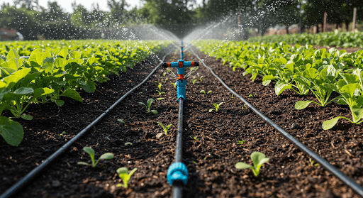
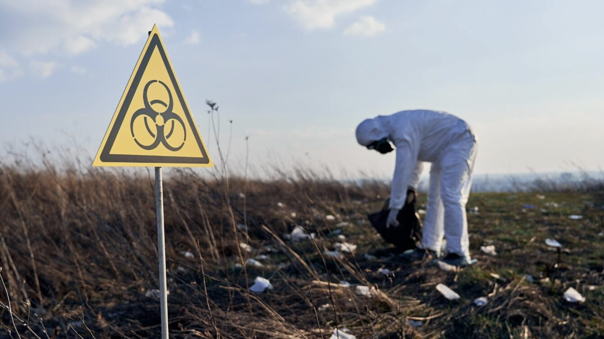
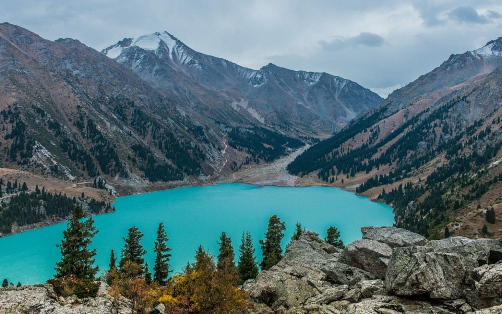

Главные новости экологии и устойчивого развития

В Туркестанской и Кызылординской областях ввели строгий контроль за использованием воды для полива риса и хлопка...

Мажилис одобрил исторический законопроект, защищающий экологический суверенитет страны...

Новые тропы, современные визит-центры и раздельный сбор мусора появятся в Чарынском каньоне и Көлсай көлдері.
Нажмите на город, чтобы увидеть индекс AQI (2026)
деревьев высажено в рамках «Таза Қазақстан»